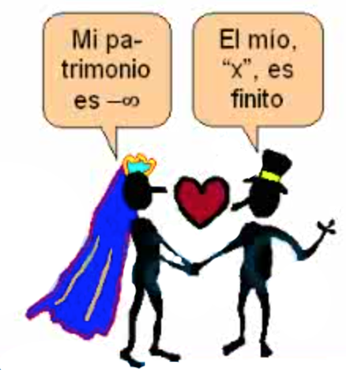

Cálculo Diferencial
Números Reales
![]()
2025-07-05
Introducción
Números Reales: El conjunto \(\mathbb{N}\) de los números naturales
Números Naturales
\[\color{red}{\Large \mathbb{N} = \{ 1, 2, 3, \cdots \}}\]
“Dios creó los números naturales,
todo lo demás es obra del hombre.”
— Leopold Kronecker
Dado \(a, b \in \mathbb{N}\), no siempre existe un número natural \(x\) tal que: \[\color{red}{a + x = b}\]. \(\color{blue}{\textbf{El Problema?}}\)
\[5 + x = 2 \quad \Longrightarrow \quad x = -3 \notin \mathbb{N}\] Pues requerimos de “números negativos”, esta necesidad obligó requiere de un nuevo conjunto de números al cual llamaremos enteros \[\color{red}{\mathbb{Z}}=\{\cdots,-3,-2,-1,0,1,2,3,\cdots\}\]
Números Reales: El conjunto \(\mathbb{N}\) de los números naturales
¿Qué significa “\(a, b \in \mathbb{N}\)”?
- Queremos hablar de números naturales: positivos.
- Al escribir \(a, b \in \mathbb{N}\), estamos diciendo:
“Tomemos dos números naturales cualesquiera: uno lo llamamos \(a\), y otro \(b\)”
Esto nos permite hablar en general, sin decir exactamente qué números son.
Es como decir:
“Imagina dos números enteros… no importa cuáles, pero piensa que existen.”
Ahora bien, no siempre se puede encontrar otro natural \(x\) que cumpla:
\[a + x = b\]
Por ejemplo, si \(a = 2\) y \(b = 5\)…
→ ¿Existe un número entero \(x\) tal que \(x = -3\)?
❌ No, porque \(x = -3\) **No es un número natural
Números Reales: El conjunto \(\color{red}{\mathbb{Z}}\) de los números enteros
\[\color{red}{\mathbb{Z}}=\{\cdots,-3,-2,-1,0,1,2,3,\cdots\}\]
\(\color{blue}{\textbf{El problema de Números Enteros}}:\)
Dado \(a, b \in \mathbb{Z}\), no siempre existe un número entero \(x\) tal que
\[\color{red}{a \cdot x = b}\]
\[5 \cdot x = 2 \quad \Longrightarrow \quad x = \frac{2}{5} \notin \mathbb{Z}\]
El conjunto \(\color{red}{\large \mathbb{Q}}\) de los números racionales está formado por aquellos que pueden expresarse como un \(\color{blue}{\textbf{cociente entre un número entero y un número natural}}\).
Son racionales los números que tienen un número finito de cifras decimales , y también los \(\color{blue}{\textbf{números periódicos}}\)
Números Reales: El conjunto \(\color{red}{\mathbb{Z}}\) de los números enteros
Por parecidos que sea dos racionales entre ellos, hay una infinidad de racionales
Si \(a=1.41\) y \(b=1.42\)
\[a<1.41\color{red}{37823445637867951846636}<b\] Lo que significa que los racionales están muy comprimidos (pegaditos), tan juntitos que parece que contituyen un todo continuo y que llenan por completo la recta soporte, podía parecer que la visualizacion de \(\color{red}{\mathbb{Q}}\) es la propia recta soporte.
La recta real ampliada \(\mathfrak{R}\)
Llamamos recta real ampliada al conjunto que resulta al añadir a \(\mathfrak{R}\) los simbolos \(+\infty\) y \(-\infty\).
La recta real ampliada \(\mathfrak{R}\)
La recta real ampliada \(\mathfrak{R}\)
Tambien convenimos que \(\forall x \in \mathfrak{R}\), es:
\[ \begin{array}{lll} x + (+\infty)= (+\infty)+(+\infty)=+\infty\\ x + (-\infty)= (+\infty)+(+\infty)=+\infty\\ \dfrac{x}{+\infty}=\dfrac{x}{-\infty}=0 \end{array} \]

\[ x . (-\infty) \texttt{=} (-\infty).x = \begin{cases} -\infty, & \text{si x > 0 }\\ +\infty,& \text{si x < 0 } \end{cases} \] \[ x . (+\infty) \texttt{=} (+\infty).x = \begin{cases} +\infty, & \text{si x > 0 }\\ -\infty,& \text{si x < 0 } \end{cases} \]
Que quede claro!
En general, con \(\color{blue}{+\infty}\) y \(\color{blue}{-\infty}\)
No tienen sentido las operaciones que hacemos con los numeros
Intervalos de la recta real
Siendo \(a,b \in \mathfrak{R}\) tales que \(a<b\), se llaman intervalo de origen “a” y extremo “b” a los siguientes subconjuntos de \(\mathfrak{R}\):
\[ \begin{array}{llll} [a,b]=\{x \in \mathfrak{R}| a\leq x\leq b \} \equiv \textbf{intervalo cerrado} \\ (a,b)=\{x \in \mathfrak{R}| a < x < b\} \equiv \textbf{intervalo abierto} \\ [a,b)=\{x \in \mathfrak{R}| a < x\leq b \} \equiv \textbf{cerrado por la izq.} \\ \phantom{(a,b]=\{x \in \mathfrak{R}| a < x\leq b \} \equiv } \textbf{y abierto por la der.} \\ (a,b]=\{x \in \mathfrak{R}| a \leq x < b \} \equiv \textbf{abierto por la izq.} \\ \phantom{[a,b)=\{x \in \mathfrak{R}| a \leq x < b \} \equiv } \textbf{y cerrado por la der.} \\ \end{array} \]
\[ \left. \begin{array}{llll} [4,9]=\{x \in \mathfrak{R} \mid 4 \leq x \leq 9 \}\\ (2,5)=\{x \in \mathfrak{R} \mid 2 < x < 5 \}\\ [-4,2)=\{x \in \mathfrak{R} \mid -4 \leq x < 2 \}\\ (6,8]=\{x \in \mathfrak{R} \mid 6 < x \leq 8 \} \end{array} \right\} \begin{array}{ll} \text{Para expresar que tienen una amplitud finita }, \\ \text{se dice que son acotados} \end{array} \]
Los siguientes intervalos tienen amplitud infinita, y para expresarlo se dice que son no acotados: \[ \begin{array}{lll} [a,+\infty) = \{ x\in \mathfrak{R} \mid x \geq a \} ; [a,+\infty) = \{ x\in \mathfrak{R} \mid x > a \}\\ [-\infty,a) = \{ x\in \mathfrak{R} \mid x \leq a \}; [-\infty,a) = \{ x\in \mathfrak{R} \mid x < a\} \\ \end{array} \] Se dice que un intervalo es compacto si es cerrado y acotado, como los intervalos \([-2,3],[1,8],[6,9]\)
Valor absoluto de un número real
El valor absoluto de un número real “\(x\)” es el número real no negativo que se denota por \(|x|\) y se define de la siguiente manera: \[ |x| = \left\{ \begin{array}{ll} x, & \text{si } x \geq 0 \\ -x, & \text{si } x < 0 \end{array} \right. \]
Ejemplos:
Como \(5 > 0\), se tiene:
\(|5| = 5\)Como \(-7 < 0\), se tiene:
\(|-7| = -(-7) = 7\)
Propiedades del valor absoluto:
- \(|x| > 0\) si \(x \neq 0\)
- \(|0| = 0\)
- Si \(k > 0\) y \(|x| < k\), entonces \(-k < x < k\)
- \(|x \cdot y| = |x| \cdot |y|\)
- \(|x + y| \leq |x| + |y|\)
Aplicaciones del valor absoluto
Distancia entre dos puntos
Para evaluar la proximidad entre dos puntos “\(x\)”, “\(y\)” usaremos el numero real no negativo llamado distancia entre “\(x\)” e “\(y\)”, que se denota \(d(x,y)\), siendo:
\[d(x,y)= \mid y-x\mid \,\geq 0\]
Ejemplos de distancia y valor absoluto
Ejemplo 1: La distancia entre los puntos \(-4\) y \(8\) es: \[ |8 - (-4)| = |12| = 12 \]
Ejemplo 2: También se puede calcular como: \[ |4 - (-8)| = |-12| = 12 \]
Observación:
Dos puntos “x” e “y” son muy (poco) próximos si \(d(x, y) = |y - x|\)
es un número muy próximo a cero.
Entorno de un punto en la recta real (continua…)
Si \(c \in \mathfrak{R}\) y \(r>0\), el entorno de centro en “c” y radio “r” se denota \(B_r(c)\), y lo froman los puntos “x” cuya distancia a “c” es inferior a “r”.
\[ B_r(c)=\{ x \in \mathfrak{R} \mid |x-c|<r \}=(c-r,c+r) \]
El entorno de centro en “5” y radio \(0.02\) lo forman los “x” tales que \(|x-5|<0.02\), o sea, son los puntos de intervalo \((5-0.02, 5+0.02) \equiv (4.98,5.02)\).
Del intervalo \((4.98,5]\) se dice que es el semientorno izquierdo de “\(5\)” y radio \(0.02\).
Del intervalo \([5,5.02)\) se dice que es el semientorno derecho de “\(5\)” y radio \(0.02\).
Entorno de un punto en la recta real
\[ B_r(c)=\{ x \in \mathfrak{R} \mid |x-c|<r \}=(c-r,c+r) \]
Si de \(B_r(c)\) eliminamos el propio “\(c\)”, obtenemos el entorno reducido de centro en “\(c\)” y radio “\(r\)”, que denotamos \(B^*_r(c)\):
\[ B^*_r(c)=\{ x \in \mathfrak{R} \quad 0 < \mid |x-c|< r \}=(c-r,c) \cup (c,c+r) \]
El entorno \(\color{blue}{reducido}\) de centro en “\(5\)” y radio \(0.02\) lo froman los x tales que \(0<|x|<0.02\); o sea, tales que \(x \in (4.98,5) \cup (5,5.02)\).
Del intervalo \((4.98,5)\) se dice que es el \(\color{blue}{\text{semientorno reducido izuierdo}}\) de “\(5\)” y radio \(0.02\); el intervalo \((5,5.02)\) es el semientorno reducido derecho de “\(5\)” y radio \(0.02\)
Entorno de un punto en la recta real (continua…)
De todo intervlo \((a,+\infty)\) se dice que es un entorno de \(+\infty\).
Por ejemplo, el intervalo \((6,+\infty)\) es entorno de \(+\infty\), lo mismo que el intervalo \((-15,+\infty)\)
De todo intervalo \((-\infty, b)\) se dice que es un entorno de \(-\infty\).
Por ejemplo, el intervalo \((- \infty,7)\) es entorno de \(-\infty\), lo mismo que el intervalo \((-\infty,-17)\).
Que quede Claro!
En estos dos casos la palabra reducido no quita ni pone nada a la palabra entorno pues como \(+\infty\) no es un numero, hablar de un entorno de \(+\infty\) es igual que hablar de un entorno reducido de \(+\infty\), y lo mismo con \(-\infty\).
Propiedades de los números reales: \(\mathfrak{R}\)
Supondremos la existencia de un conjunto \(\mathbb{R}\) de números en el que hay definidas dos operaciones, suma y producto, con las siguientes propiedades:
Propiedades de la suma:
Conmutativa: \(a+b= b+a\), para todos los \(a,b \in \mathbb{R}\)
Asociativa: \(a+(b+c) = (a+b)+c\) para todos los \(a,b,c \in \mathbb{R}\)
Existe un elemento neutro, \(0 \in \mathbb{R}\), para la suma: \(a+0=a=0+a\).
Para cada \(a \in \mathbb{R}\) existe un elemento \(-a \in \mathbb{R}\), simétrico de \(a\), tal que \(a+(-a)=0=(-a)+a\)
Propiedades de los números reales: \(\mathfrak{R}\)
Propiedades del producto de números reales:
Conmutativa: \(a\cdot b=b \cdot a\), para todos los \(a,b \in \mathbb{R}\).
Asociativa: \(a \cdot (b \cdot c) = (a\cdot b)\cdot c\) para todos los \(a,b,c \in \mathbb{R}\)
Existe un elemento neutro, \(1 \in \mathbb{R}\), para el producto: \(a\cdot1=a=1\cdot a\).
Para cada \(a \in \mathbb{R}\), \(a\neq 0\), existe un elemento \(\dfrac{1}{a} = a^{-1} \in \mathbb{R}\), inverso de \(a\), tal que \(a \cdot a^{-1}=1=a ^{-1}\cdot a\)
El producto es distributivo respecto de la suma: \(a\cdot (b+c) = a\cdot b + a \cdot c\) para todos los \(a,b,c \in \mathbb{R}\). :::
## Nuevo tema
Los lobros aaun faltan editar

© 2025 Elvis Sánchez – Universidad Técnica de Machala